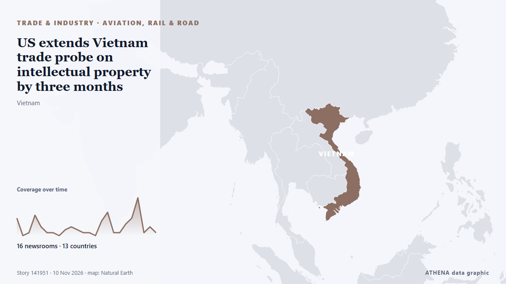

US extends Vietnam trade probe on intellectual property by three months

Relayé de façon indépendante par 16 médias dans 13 pays depuis le 4 nov. ; premier à l'annoncer : Oman Observer ; la couverture faiblit. ATHENA juge le risque modéré (3.1/10), surtout en raison de la gravité des dommages décrits et de sa portée géographique et sectorielle. La confiance est de 80 % (élevée) : 16 médias indépendants le confirment, avec une fiabilité moyenne des sources de 73 %. Médias par pays : Viêt Nam (28), Oman (3), Japon (2). Couverture : du 4 nov. au 8 nov., 96 heures.
Pourquoi c'est important: Les perturbations du commerce, de l'industrie ou des infrastructures se propagent le long des chaînes d'approvisionnement et changent coûts et délais au loin.
Ce qui a changé : 23 nouveaux articles de 7 rédactions dans les 24 heures jusqu'au 10 nov..
Premier titre : Oman and Vietnam hold session of political consultations
Les titres sont affichés en anglais, tels que publiés.
Comment lire cette page
- Ce que vous lisez
- 16 médias dans 13 pays ont rapporté cet événement. Les reportages ci-dessous sont classés selon leur ordre de parution ; chaque titre ouvre l'article original. ATHENA n'écrit aucun reportage.
- Notre lecture
- Pour mémoire — Les reportages décrivent une affaire terminée, intérieure, commerciale ou personnelle. Nous la consignons pour que vous voyiez qui l'a rapportée et quand. Nous ne suivons pas ici de risque de conflit plus large.
- Quelle base de preuves
- Limitée Considérez cette page comme un premier compte rendu.
Après retrait des doublons, des éléments hors sujet et périmés, 6 des 40 reportages listés sont retenus ; 55 % des titres correspondent à l'événement.
- Ce que cela ne veut pas dire
- ATHENA mesure la façon dont un événement est rapporté, pas sa véracité. Ce n'est ni une prévision, ni un jugement sur qui a raison, ni un conseil.
- Ce qui la changerait
- Des reportages d'autres médias indépendants montrant une évolution différente, ou une confirmation ou un démenti ferme d'une source officielle.
Lecture R2 · actualisée à chaque mise à jour de cette page. ATHENA n'a pas encore publié de bilan de ces lectures ; il sera lié ici le moment venu.
En un coup d'œil
Sélectionné, noté et rédigé par la méthodologie publiée d'ATHENA. Aucun rédacteur n'intervient sur un événement en particulier. Comment il est produit ›
| 04 Nov 11:52 UTC | 6 |
|---|---|
| 04 Nov 17:52 UTC | 0 |
| 04 Nov 23:52 UTC | 1 |
| 05 Nov 05:52 UTC | 7 |
| 05 Nov 11:52 UTC | 3 |
| 05 Nov 17:52 UTC | 1 |
| 05 Nov 23:52 UTC | 1 |
| 06 Nov 05:52 UTC | 0 |
| 06 Nov 11:52 UTC | 2 |
| 06 Nov 17:52 UTC | 3 |
| 06 Nov 23:52 UTC | 2 |
| 07 Nov 05:52 UTC | 1 |
| 07 Nov 11:52 UTC | 1 |
| 07 Nov 17:52 UTC | 0 |
| 07 Nov 23:52 UTC | 5 |
| 08 Nov 05:52 UTC | 8 |
| 08 Nov 11:52 UTC | 1 |
| 08 Nov 17:52 UTC | 1 |
| 08 Nov 23:52 UTC | 4 |
| 09 Nov 05:52 UTC | 6 |
| 09 Nov 11:52 UTC | 13 |
| 09 Nov 17:52 UTC | 1 |
| 09 Nov 23:52 UTC | 3 |
| 10 Nov 05:52 UTC | 4 |
| 06 Nov 14:30 UTC | 3.0 |
|---|---|
| 06 Nov 14:41 UTC | 1.9 |
| 08 Nov 01:31 UTC | 2.9 |
| 10 Nov 11:29 UTC | 3.1 |
Pourquoi ces chiffres
Importance
Risque
Confiance
La couverture : qui l'a annoncé, et quand
titre tel que publié · ouvre l'original- Oman Observer · OmanOman and Vietnam hold session of political consultations
- Oman Observer · OmanInformation Ministers session addresses media
- Tuoi Tre News · Viêt NamFlood-scarred Vietnam community builds digital map for better response
- Tuoi Tre News · Viêt NamVietnam’s iconic Dalat Railway Station twinned with its French architectural inspiration
- News of Bahrain · BahreïnCybersecurity Lecture Held for Open Prison Beneficiaries
- Tuoi Tre News · Viêt NamVideo: For 30 years, time in this Hanoi alley has been measured in dialysis sessions
- Tuoi Tre News · Viêt NamVietnam Morning Monitor: Shoppers hunt for Black Friday deals early, province culls 600 pigs over swine fever
- Tuoi Tre News · Viêt NamVietnamese banks draw billions of US dollars in foreign capital inflows
- Tuoi Tre News · Viêt NamAfrican swine fever outbreaks put Vietnam's Mekong Delta pig herds at risk
- Tuoi Tre News · Viêt NamWhy are Vietnamese retailers pulling Chinese smartphone brands from store shelves?
- Oman Observer · OmanVietnam to open embassy in Muscat
- Free Malaysia Today · MalaisieRecord surplus unlikely to alter US-Vietnam trade ties after midterms
- Khmer Times · CambodgeNBC, SBV, BOL strengthen central bank cooperation at Da Nang talks
- Tuoi Tre News · Viêt NamVideo: Meet the 10-year-old Vietnamese boy who swims 50km down the Red River in northern Vietnam
- Express Tribune · PakistanPost-midterm ME order
- Tuoi Tre News · Viêt NamVietnam has opportunity to strengthen US trade ties amid Washington's post-midterm policy shift: ex-ambassador
- Tuoi Tre News · Viêt NamVietnam, France step up cooperation in AI, digital twin technology
- Nikkei Asia · JaponJapan to back Vietnam's small-reactor push in revived nuclear cooperation
- Tuoi Tre News · Viêt NamVietnam Morning Monitor: Amazon aims to take 30 local brands global, trade with Japan could reach $75bn by 2030
- Tuoi Tre News · Viêt NamOver 25kg of prohibited cannabis plant material found in foreign passenger's luggage bound for France
- Tuoi Tre News · Viêt NamAmazon targets 30 Vietnamese national brands for global expansion
- Tuoi Tre News · Viêt NamVietnamese, Indian businesses forge sustainable partnerships at Green Business Matching Day Vietnam 2026
- Tuoi Tre News · Viêt NamVietnamese man wins $7.6mn in Vietlott lottery
- Tuoi Tre News · Viêt NamEU-funded project to help over 400 Vietnamese coffee businesses meet international standards
- Tuoi Tre News · Viêt NamVietnam Morning Monitor: Hoi An cracks down on improper foreign-language signs, 1.9 million accounts at cyber risk
- Tuoi Tre News · Viêt NamJapan's KOKUYO acquires 46.82% stake in Vietnamese stationery maker Thien Long
- Tuoi Tre News · Viêt NamIn Vietnam, '123456' remains password for nearly 1.9 million bank accounts
- Tuoi Tre News · Viêt NamVietnamese students make kimchi, try hanbok at Korean culture event
- Tuoi Tre News · Viêt NamVietnam Morning Monitor: Centuries-old shipwreck off Hoi An to be displayed in museum, Nha Trang bans beach soccer citing tourist safety concerns
- Tuoi Tre News · Viêt NamVietnamese man arrested over $426,000 overseas property scam
- VnExpress International · Viêt NamVietnam's top leader begins official visit to Japan
- Tuoi Tre News · Viêt NamYoung visitors flood traditional food stalls at Green Vietnam Festival 2026
- Tuoi Tre News · Viêt NamHanoi beauty Nguyen Yen Trang crowned Miss Vietnam 2026
- Nikkei Asia · JaponVietnam leader To Lam visits Japan as decades-old relationship evolves
- Tuoi Tre News · Viêt NamVietnamese exports to West Africa face additional $800 per container surcharge
- IRNA (English) · IranVietnamese envoy calls for student exchange program between Imam Khomeini, Hanoi universities
- Korea Herald · Corée du SudVietnam takes baton from Seoul for 2028 gathering of Asia, Oceanian parties
- Tuoi Tre News · Viêt NamTop Vietnamese leader begins official visit to Japan
- Tuoi Tre News · Viêt NamJapan moves to open market to Vietnamese pomelo, passion fruit
- Anadolu Agency (English) · TurquieVietnamese president begins Japan visit